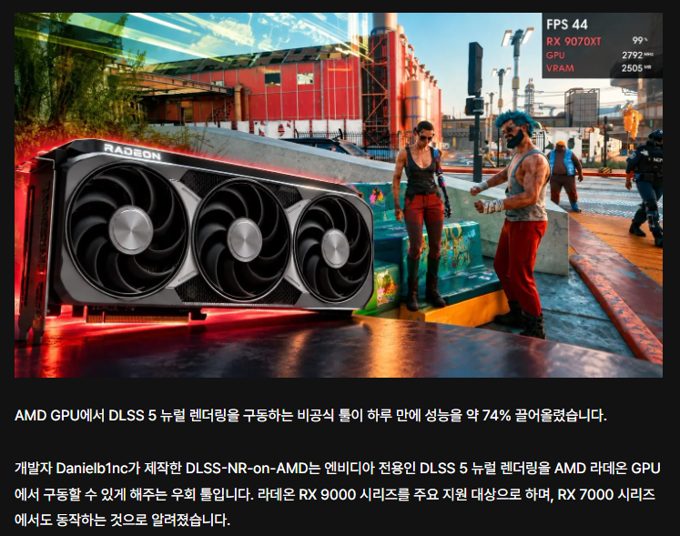
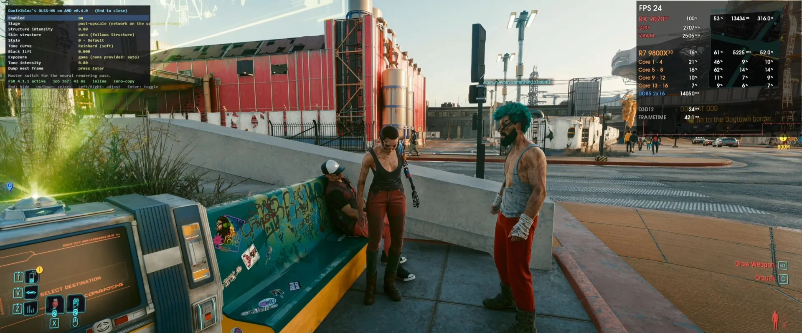
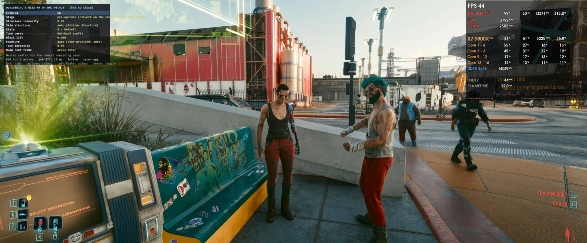

사이버펑크 2077을 3440x1440p 해상도 이전모드 기준 30프레임 인데

이 Alpha 0.4.0에서 50 FPS까지 올라온 것으로 확인됨
암드가 안해주니 유저들이 알아서 모드로 성능 끌어올리는중
암드판 DLSS5도 RDNA5 카드(10000번카드) 만 지원한다는 소리가 있던데, 이기세로 발전하면 좋을듯함
한줄요약 : 9070XT 전투력이 계속 상승하고있음


사이버펑크 2077을 3440x1440p 해상도 이전모드 기준 30프레임 인데

이 Alpha 0.4.0에서 50 FPS까지 올라온 것으로 확인됨
암드가 안해주니 유저들이 알아서 모드로 성능 끌어올리는중
암드판 DLSS5도 RDNA5 카드(10000번카드) 만 지원한다는 소리가 있던데, 이기세로 발전하면 좋을듯함
한줄요약 : 9070XT 전투력이 계속 상승하고있음
햐 역시 큰일은 모더들이 한다
9070XT유저인데 희소식이네.
90에 팔고 5080샀는데 실망...
저런 모더들 영입안하고머하냐?
DLSS 5 면 엔비디아 기술인데 amd가 지원해주긴 힘들지
공식으로 밀어주기엔 좀 거시기하지 ㅋㅋㅋ
CUDA를 AMD카드에서 돌리게 하는 ZLUDA도 AMD에서 돈대주다가 끊음
애초에 저걸 추출해서 다른하드웨어에 연결시키는게 라이선스위반일 가능성이 높음
엔비디아는 저걸로 수익화하는게 아닌 이상 굳이 잡진 않겠지만 암드이름걸고 할수있는건 없지
암드도 똑같이 4비트 텐서코어 있고 성능도 나쁘지 않으니까 DLSS5같은건 물리적으론 얼마든지 돌릴수있지
그리고 암드에서도 DLSS5랑 유사한 기능 개발중이라는데 아마 FSR시리즈처럼 MIT라이선스(오픈소스)로 풀릴듯
잘나가나 싶다가 드라이버 문제 생겨서 복구하느라 시간소비하는게 늘 있었던 패턴이었는데 이전 아닌가보네
FSR은 아직 들스에 못 비비지 ?
dlss4정도까지는 따라옴
dlss5는 대응 기술 개발중인데 소니랑 차세대 콘솔에 넣는거 때문인지 빨라야 올해 말 늦으면 내년에 공개될거라는 루머가 있음
RT도 어느정도 따라왔지만 RR이나 PT는 좀 처참함
라데온은 칩셋 분류가 뭔가 직관적이지가 않음..
내 9070xt가 저런능력이 있다고?
디아블로4도 버벅여서 5080으로 갈아탈까 했드만
이쉐끼 일하기 싫어서 밍기적 된건가
몸뚱이 짱짱한디 쓸 줄을 모르는 것임...
저거는 온라인연결되는 게임은 절대 못하겠네 ㅋㅋ
970은 뭐없나요?
6700xt는 뭐 없나요? FSR4.1 강제로 써보기 말고는 재미가 없네요
라데온도 성능자체는 좋은데
라데온에서 dlss가 돌아가는게 신기하네
근데 그러면 라데온 유저들은 계속 비공식 dlss5로만 써야하는건가
암드에서도 NR 사용하는 fsr 개발중이고 빠르면 올해말, 늦으면 내년에 공개 루머 있음
너의 아마추어 모더들 맞지?
네
그래 잘 하자
역시 성장형 글카
저거 80만에 들고온사람들이 ㄹㅇ 승리자네